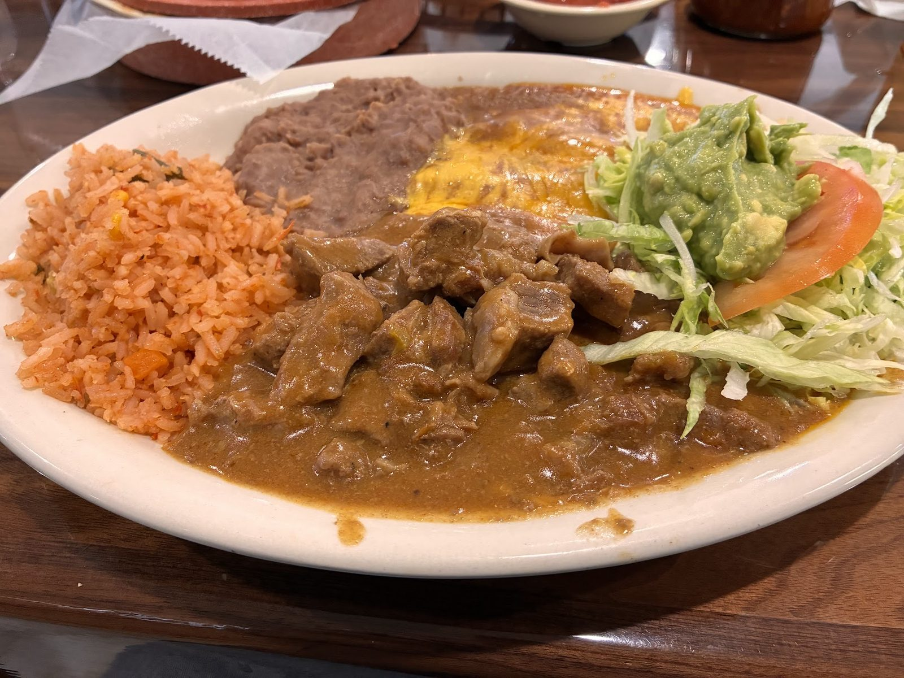

Breakfast
Hearty breakfast every morning, served from 6 AM.
Bienvenidos · North I-35, San Antonio
Breakfast, lunch and dinner under the green sign on North I-35. Red salsa made here, and good tea.

Come hungry
Breakfast to dinner, from chips and salsa to a sizzling plate for the table.
Hearty breakfast every morning, served from 6 AM.

Chips come with a red salsa made here. It is the hot sauce.

Sizzling grilled meats and shrimp with rice, beans and fresh tortillas.


4.2 ★ · 2060 Google reviews
⭐️⭐️⭐️⭐️⭐️ Excellent Food, Service, and Hospitality! We had such a great experience at Taqueria Hacienda Tapatia in San Antonio! The food was delicious, the service was fast, and every staff member who waited on us was friendly and attentive. But I have to give a special shout-out to Chris, our waiter. This young man really won us over!
Been coming here for years. I know since 2001. Seeing them grow over the years is truly amazing. Yall keep up the good work. And know im coming through during a visit of san antonio. It's a must. This place bring back so many memories. #dadndaughterdineins ❣️ and tea is always on point.
A modest and busy Mexican restaurant with killer breakfast and homemade salsas instead of hot sauce because the red one is the hot sauce! Despite it's modest appearance outside, it is bustling inside and an incredibly underrated Mexican restaurant. Super friendly staff and this place is a vibe! Excellent food and service! People here just know what they're doing. If you don't come here, you're missing out!

Hello, we're
A plain strip-mall front hides a busy dining room serving Jalisco-style food, breakfast, homemade salsas and tea.
Friendly staff, fast service and a warm welcome, whether it is your first visit or your fiftieth.
Pick up at
6402 N Interstate 35, San Antonio, TX 78218
On North Interstate 35 in San Antonio. Walk in any day from breakfast through dinner.